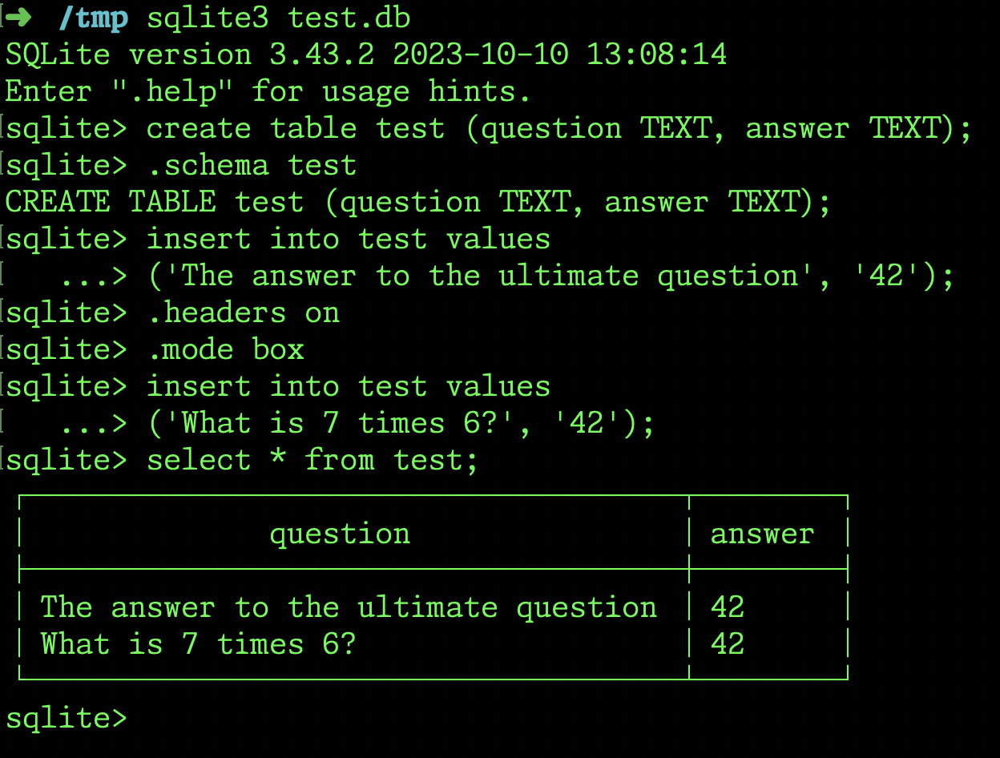

Design principles¶
The following are commonly practiced design principles. I’ve tried to illustrate them using simple examples.
Experiment to understand before coding¶
In other words, don’t hesitate to write throw away code that you use to clarify your own understanding.
For example, if you don’t know how to use a particular SQL statement, you can try it out first on the sqlite3 REPL before you use the statement in your code.

A sample interaction on the shell to clarify the insert statement.¶
More broadly any aspect of your system that you feel you need to understand better could use some separate experimentation of this kind.
The benefit of this is that you develop a habit of critically examining your understanding and it will grow as you learn more through your experiments. Also, if you keep piling on code that you don’t understand, then when your application doesn’t work as you expected, you’ll find it hard and frustrating to figure out what is going wrong … because there will be many things going wrong.
At suitable junctures, you can also capture significant experimental code for the benefit of your team.
A corollary of this is to ensure that as you’re building your application, you always keep it runnable at every stage, even if “running it” means it does nothing in the initial stages. Every little bit of functionality code you add, make sure that you manage to run the code at least once.
An even better and professional discipline is to write tests for your code, which not only helps ensure that your code continues to work across future changes, but also helps explain how to use your code/libraries to your team.
Separation of concerns¶
A given function or procedure should not do both Input/Output (such as input() and print()) and some significant computation with that data. The I/O is better kept separate from the core computation which is to be expressed using appropriate data structures. This helps in the following ways -
Making the core logic testable.
Substituting input() and print() with, say, network I/O without changing the core logic.
Contain the impact of any changes that need to be made to some aspect of the code.
Modules, classes and functions are all suitable options to effect separation of concerns. Keep each function’s, class’s and module’s role clear without mixing concerns. Don’t throw all your code into a single file for example, especially if it has many complex parts to it.
Document your functions¶
Describe the following when writing functions –
How are you representing the inputs to your function. Note that the function’s signature gives away some of this information, so you can use that to be clear about this as well. But if you have an argument that’s, say, an integer or string, it may need additional description except in some very simple circumstances.
How is the function returning its results.
What does the function compute.
Give some key illustrative examples.
The above helps the function’s user to know how to use it without necessarily having to dive into how it works.
For your function’s design, you’ll also need to chart out a plan for how to code it as well. The above steps should help you with that, but subsequently also write a single comment describing how the function should do its computation and that should help you with writing its code. In short, use “writing to discover” to help you design your functions.